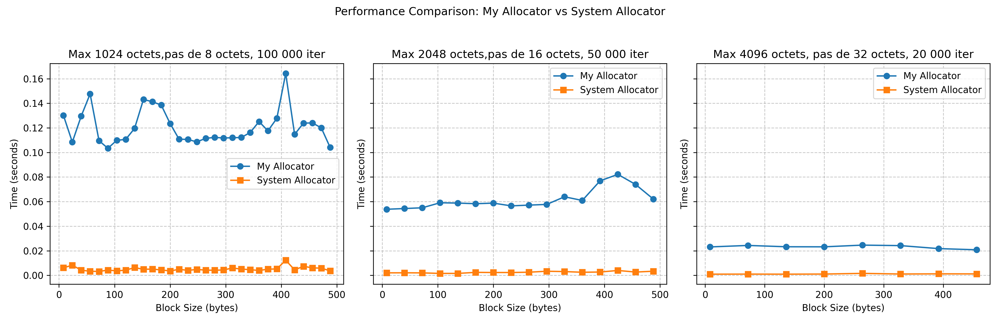
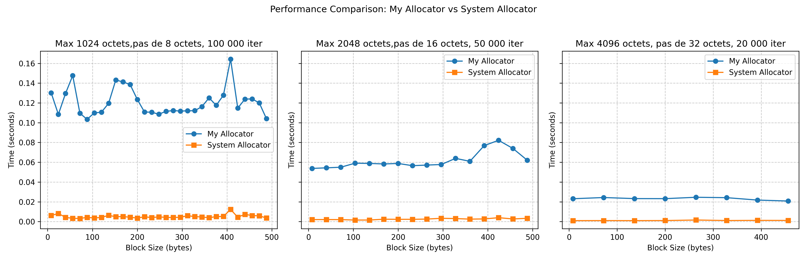
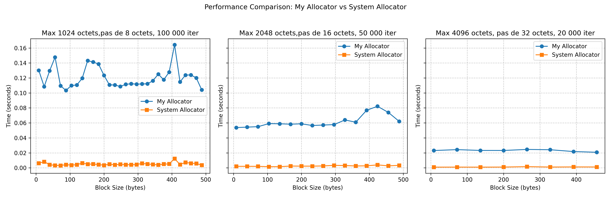

 Ce projet consiste à implémenter un allocateur mémoire personnalisé
en utilisant des mécanismes bas-niveau en C. L’objectif est de créer une
version optimisée d’un allocateur mémoire, avec une gestion fine de la
mémoire via mmap et munmap. Le projet est basé
sur l’utilisation de mmap pour l’allocation mémoire et des
optimisations pour améliorer les performances par rapport à l’allocateur
système classique malloc/free.
Le projet utilise un fichier Makefile pour faciliter la
compilation et l’exécution. Il permet de spécifier différents niveaux
d’optimisation pour la compilation avec les options -O2 et
-O3. Vous pouvez choisir l’option de compilation avec la
variable O :
Compilation par défaut (avec debug) :
bash make all
Compilation avec optimisation -O2 :
bash make all O=O2
Compilation avec optimisation -O3 :
bash make all O=O3
Nettoyage des fichiers générés :
bash make clean
Tests unitaires : Après compilation, vous pouvez
exécuter les tests unitaires pour vérifier le bon fonctionnement de
l’allocateur. bash ./build/my_allocator_tests
Tests de performance : Pour exécuter les tests
de performance et mesurer l’efficacité de l’allocateur comparé à
l’allocateur système :
bash ./build/performance_test
Afficher les performances avec
matplotlib
Pour visualiser les performances des tests effectués, nous avons
utilisé la bibliothèque Python matplotlib pour générer des
graphiques comparant les performances des différents allocateurs
mémoire.
bash source env/bin/activatebash .\env\Scripts\activatematplotlib et numpy) en exécutant :
bash pip install -r requirements.txtbash python ./benchmarks/plot_performance.py ##
Explication des Choix d’ImplémentationChaque bloc alloué ou libre est représenté par une structure
Block. Elle contient les informations suivantes : -
size : taille du bloc alloué. - next :
pointeur vers le bloc suivant. - free : statut de
l’allocation (1 pour libre, 0 pour alloué). - ptr :
pointeur vers l’espace mémoire alloué.
Cette structure permet de gérer efficacement l’allocation et la libération de mémoire. Lorsqu’un bloc est libéré, il est ajouté à une liste chaînée de blocs libres.
my_mallocmy_malloc cherche un bloc libre qui peut
contenir la taille demandée.mmap et ajouté à la liste des blocs.my_freemy_free cherche le bloc correspondant à
l’adresse passée en argument.coalesce_free_blocks est appelée pour fusionner les blocs
libres adjacents.mmap. Cela améliore l’efficacité de
l’allocateur.coalesce_free_blocks permet de fusionner
les blocs libres adjacents pour réduire la fragmentation de la mémoire.
Cela rend l’allocateur plus efficace dans la gestion de la mémoire.mmap.mmap. Cela améliore
l’efficacité en utilisant des pools de mémoire pour différentes tailles
d’allocations, ce qui permet d’allouer et de libérer plus rapidement des
blocs de taille similaire.gcc -o multi_tread_test ./benchmarks/multithread_env_perf_test.c ./src/my_allocator_multi_thread.c -pthreadLes tests de performance ont été réalisés pour comparer la vitesse de notre allocateur mémoire personnalisé avec l’allocateur système (libc). Voici les résultats obtenus :
Les tests ont mesuré le nombre d’allocations et de désallocations effectuées par seconde pour différentes tailles de blocs.

Ces résultats montrent une amélioration significative de la vitesse d’allocation lorsque des optimisations sont appliquées, notamment la fusion des blocs libres et la réutilisation des blocs mémoire. Et on voit bien, plus la taille des blocs augmente, plus on se rapproche des performances de malloc/free du system.
Ce projet a permis de créer un allocateur mémoire personnalisé avec
une gestion fine des blocs et des optimisations pour améliorer les
performances. Les optimisations mises en place ont permis d’améliorer
les performances d’allocation et de réduction de la fragmentation
mémoire, tout en maintenant la compatibilité avec les appels standards
malloc et free.
Des optimisations futures pourraient inclure des stratégies avancées de gestion de mémoire pour des cas d’utilisation spécifiques.